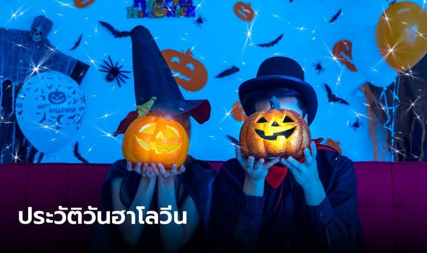
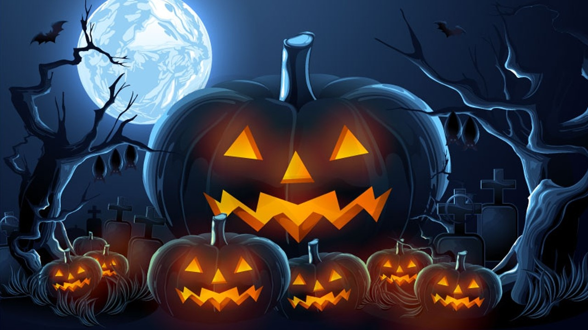
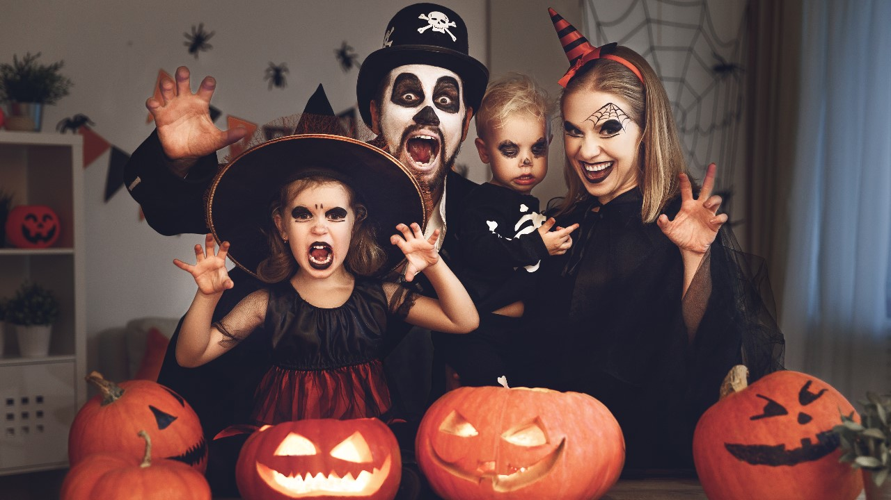
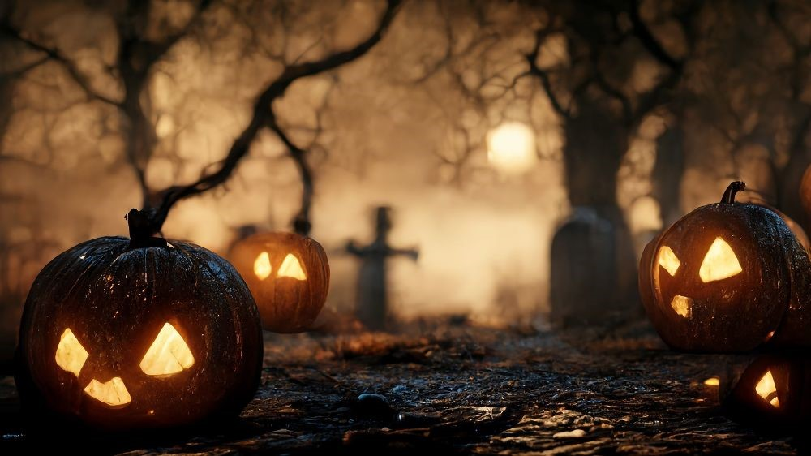

หน้าแรก
ประวัติวันฮาโลวีน

ประวัติ "วันฮาโลวีน" และกิจกรรมที่นิยมทำในวันปล่อยผี 31 ตุลาคมของทุกปี!
วันฮาโลวีน
ตรงกับวันที่ 31 ตุลาคม ของทุกปี ซึ่งตรงกับคืนก่อนวันออลเซนต์ส
(All Saints' Day) ในศาสนาคริสต์ เชื่อกันว่าเป็นวันที่วิญญาณของคนตายจะออกมาป่วนโลกมนุษย์ ชาวเคลต์โบราณจึงมีการจัดงานฉลองเพื่อต้อนรับวิญญาณเหล่านี้ และเพื่อขอพรให้วิญญาณเหล่านี้ไม่ทำร้ายพวกเขา
ประเทศทางตะวันตก เด็กๆ จะแต่งกายเป็นภูตผีปีศาจพากันชักชวนเพื่อนฝูงออกไปงานฉลอง มีการประดับประดาแสงไฟ และที่สำคัญคือแกะสลักฟักทองเป็นโคมไฟ เรียกว่า
แจ๊ก-โอ-แลนเทิร์น (Jack-o-lantern)

วันฮาโลวีน 2024 ตรงกับวันที่เท่าไร
ในปี 2024 วันฮาโลวีน (Halloween) ตรงกับวันพฤหัสบดีที่ 31 ตุลาคม 2024
ประวัติวันฮาโลวีน (Halloween)
วันฮาโลวีน (Halloween) เป็นงานฉลองในคืนวันที่ 31 ตุลาคมของทุกปี เป็นวันหนึ่งที่ผู้คนทั่วโลกต่างก็เฉลิมฉลองกันด้วยหลากหลายกิจกรรม เช่น การประดับตกแต่งบ้านด้วยฟักทองแกะสลักหน้าผี การออกงานปาร์ตี้แต่งกายเป็นผีและสัตว์ประหลาด การเล่าเรื่องผี และการเล่นตลกหลอกกัน
ประวัติวันฮาโลวีนมีต้นกำเนิดมาจากเทศกาล Samhain ของชาวเซลต์หรือจะเรียกว่าชาวเคลต์ก็ได้ เป็นชนเผ่าพื้นเมืองในยุโรปตะวันตก เชื่อว่าวันที่ 31 ตุลาคมเป็นวันสิ้นสุดของฤดูร้อนและเริ่มต้นฤดูหนาว ซึ่งเป็นช่วงเวลาที่โลกแห่งความตายและโลกแห่งชีวิตมาบรรจบกัน วิญญาณของคนตายจะออกมาเดินเร่ร่อนบนโลกมนุษย์ ชาวเคลต์จึงจัดพิธีกรรมเพื่อต้อนรับวิญญาณเหล่านี้ และเพื่อขอพรให้วิญญาณเหล่านี้ไม่ทำร้ายพวกเขา
วันฮาโลวีน เรามักจะคุ้นเคยเรียกกันเป็นภาษาปากว่า วันปล่อยผี ในวันดังกล่าวมักมีการจัดตกแต่งบ้านเรือน ร้านค้า โดยใช้ฟักทองที่คว้านเป็นรูปผี หรือใช้วัสดุอื่น ๆ ประดิษฐ์เป็นตัวผีหรือทำให้มีหน้าตาเป็นผีเพื่อสร้างบรรยากาศให้กลายเป็นงานรื่นเริง
ในคริสต์ศาสนา นิกายคาทอลิก Halloween เป็นคำภาษาอังกฤษ เพี้ยนมาจากคำ All Hallows Evs ซึ่งแปลว่า วันก่อนวันสมโภชนักบุญทั้งหลาย โดยวิธีตัดต่อ Hallow + Eve = Halloween คำ Hallow เป็นคำแองโกลแซกซัน แปลว่า ทำให้ศักดิ์สิทธิ์ ตรงกับภาษาเยอรมันว่า heiligen ในปัจจุบันนิยมใช้คำมาจากภาษาละตินว่า sanctify คำ Hallow ยังมีใช้ในบทสวดอธิษฐานเก่า ๆ เช่น Hallowed be thy Name (ขอพระนามจงเป็นที่สักการะ)

กิจกรรมที่นิยมทำในวันฮาโลวีน
- แต่งตัวเป็นผีหรือสัตว์ประหลาด
- ไปงานปาร์ตี้ฮาโลวีน
- แกะสลักฟักทองเป็นรูปหน้าผี (Jack-o'-lantern)
- หลอกหรือแกล้ง (trick-or-treating) โดยเด็ก ๆ จะแต่งตัวเป็นผีหรือสัตว์ประหลาดและไปขอขนมหรือลูกอมจากบ้านใกล้เคียง
- เล่าเรื่องผีหรือดูภาพยนตร์สยองขวัญ
พวกเด็กๆ จะสนุกสนานมากในคืนวันฮาโลวีน เพราะพวกเขาจะได้แต่งตัวเลียนแบบคนตาย เช่น เป็นโจรสลัด, กัปตัน, โครงกระดูก, หญิงในสมัยโบราณ หรือสุดจะคิดค้นกันขึ้นมาอย่างในสมัยปัจจุบัน และก็เดินไปเคาะประตูตามบ้านต่างๆ เพื่อขอขนม, ลูกกวาด ฯลฯ
โดยเฉพาะบ้านที่มีลูกฟักทองล้วงเนื้อออกเพื่อใส่เทียนเข้าวางไว้ และจะมีแสงสว่างออกมาจากรูจมูก, ลูกตาและปากที่เจาะไว้บนลูกฟักทอง ตั้งไว้หน้าบ้าน เด็กๆ จะเคาะประตูและเมื่อเจ้าของบ้านเปิดประตู พวกเขาก็จะร้องทักว่า "Trick or Treat"
ซึ่งเด็กๆ ทั่วไปก็เป็นเพียงคำพูดไร้เดียงสา เพื่อพูดตามธรรมเนียมการขอขนม พวกเขาไม่เข้าใจความหมายแท้จริงของมัน เพราะว่าคำว่า "Trick or Treat" คำนี้ เป็นคำคล้ายคำพูดของพวกบูชาลัทธิปีศาจ ทำนองว่า ทำสนธิสัญญาตกลงกับมันหรือไม่ก็จะมีการล่อลวงเพราะพวกเด็กๆ จะแต่งตัว เป็นผู้ล่วงลับหรือผี ก็มาขู่เจ้าของบ้าน เด็กๆ ไม่เข้าใจความหมาย แท้จริง ก็เลยพูดกันมาตามธรรมเนียม และพวกเขาก็ไม่ได้รู้สึกไม่ดีอะไร เพียงแต่สนุกสนานเท่านั้น
พวกเจ้าของบ้านเมื่อเอาขนม, ลูกกวาดออกมาให้แล้ว บางแห่งก็จะมีการร้องเพลงให้แก่บ้านนั้น ซึ่งบางแห่งดั้งเดิมก็จะสวดภาวนาให้แก่เจ้าของบ้าน หรืออุทิศแด่วิญญาณผู้ล่วงลับ เราไม่จำเป็นต้องทำให้เด็กเสียความรู้สึกกับคำว่า "Trick or Treat" แต่ควรสอนเด็กๆ ว่า ปีศาจซ่อนเร้นอยู่ในรูปภายนอกที่ดูสวยงามคอยหลอกลวงเรา คล้ายมันใส่หน้ากาก หลอกลวงผู้คนเพื่อปิดบังโฉมหน้าแท้จริงของมัน พระคัมภีร์กล่าวว่า
"เราทั้งหลายรู้ว่า คนที่เกิดจากพระเจ้าไม่ทำบาป แต่พระบุตรของพระเจ้าได้ทรงคุ้มครองรักษาเขา

แบบทดสอบความรู้ เกี่ยวกับวันฮาโลวีน
ประวัตินักศึกษาผู้จัดทำ
เว็ปไซต์คณะวิทยาศาสตร์และเทคโนโลยี RUS